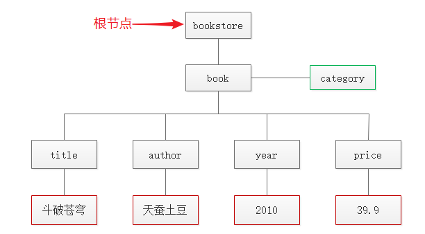
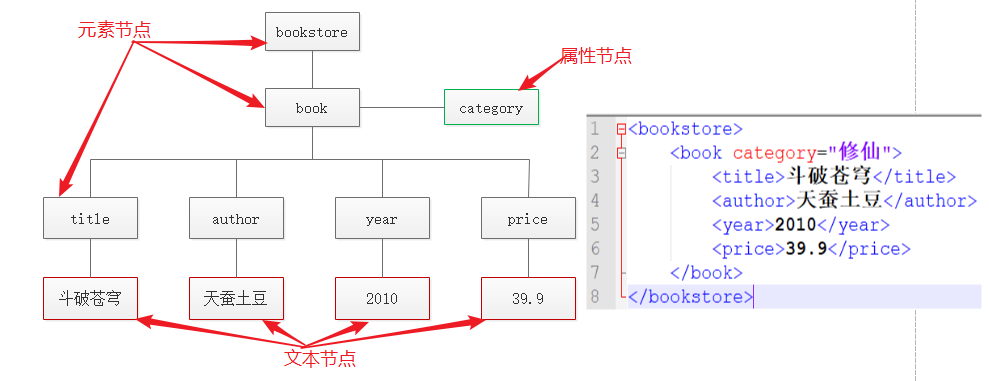
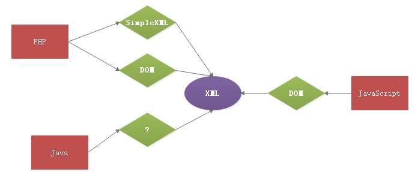
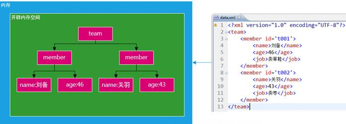
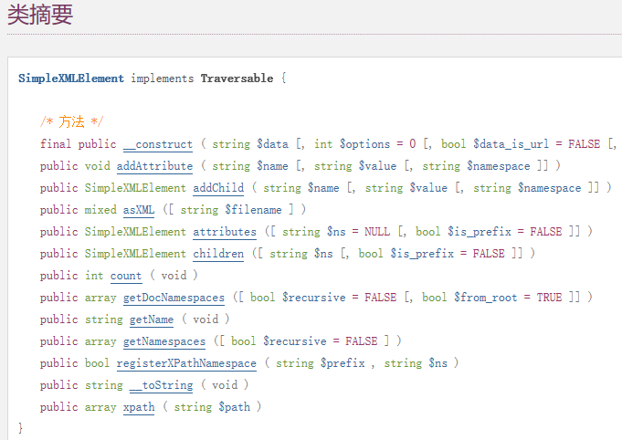

XML
一、简介（了解）
1.1、历史
GML 通用标记语言
1969年，IBM公司的一些砖家为了解决不同系统中文档格式的问题而开发的一种文档描述语言。
SGML 标准通用标记语言
1986年，ANSI组织对GML进行整理并升级为SGML。但是SGML是一种非常严谨的文档描述语言，其结构非常复杂（标准手册就有500多页），难以理解和学习，进而影响其推广与应用。
HTML 超文本标记语言（W3C）
1993年，HTML继承了SGML的许多重要的特点，比如结构化、实现独立和可描述性，但是同时它也存在很多缺陷：比如它只能使用固定的有限的标记，而且它只侧重于对内容的显示。
XML 可扩展标记语言
==1998==年，随着Web上数据的增多，这些HTML存在的缺点就变的不可被忽略。为了解决这些问题， W3C组织又基于SGML语言开发一款新的标记语言，并称之为XML。是xml1.0。到目前为止，xml的版本还是1.0。
w3c从98年就发布了XML1.0版本，到现在还是1.0版本，说明了什么？
并不是说明XML不好，反之，说明XML语法上没有缺陷，不需要升级。
1.2、概念
XML（eXtensible Markup Language）叫做 可扩展标记语言
从语法上来说，它和HTML非常像，都是使用标签语言，比如 <table></table> ，不同的是XML可以自己定义标签，比如 <name></name> 。
从意义上来说，它和HTML完全不一样，HTML用于展示数据，而XML用于==存储==或者==传输==数据。
有关XML和HTML的区别，在学习完XML语法之后，再来详细的比较。
二、==XML语法==（重点）
2.1、文档声明
一个完整的xml文档必须有一个文档声明。文档声明中要注明XML版本和XML文档的编码。
1 |
2.2、树结构
XML 文档必须包含 ==根元素==。该元素是所有其他元素的父元素。
XML 文档中的元素形成了一棵文档树。这棵树从根部开始，并扩展到树的最底端。
所有元素均可拥有子元素：

根据上图，编写XML代码：
1 |
|
如上代码，我们就描述了一本书，按照这个规律，我们还可以添加更多的书：
1 |
|
用浏览器打开这个XML文档，能够看到表示书籍的树状结构而不报错，就表示你的XML语法没有问题。
PS：XML的注释和HTML一样。
这部分总结起来就一句话：==XML有且仅有一个根元素==。
2.3、标签都必须闭合
在 HTML，经常会看到没有关闭标签的元素：
1 | <p>This is a paragraph |
在 XML 中，省略关闭标签是非法的。所有元素都 必须 有关闭标签：
1 | <p>This is a paragraph</p> |
==无论是双标记还是单标记，XML标签都必须闭合。==
注释：您也许已经注意到 XML 声明没有关闭标签。这不是错误。声明不属于XML本身的组成部分。它不是 XML 元素，也不需要关闭标签。
元素命名尽量不要用
first-name、first.name、first:name的形式。
2.4、XML 标签对大小写敏感
XML 标签对大小写敏感。在 XML 中，标签 <Letter> 与标签 <letter> 是不同的。
==必须使用相同的大小写来编写打开标签和关闭标签==：
1 | <Message>这是 错误 的。</message> |
注释：打开标签和关闭标签通常被称为开始标签和结束标签。不论您喜欢哪种术语，它们的概念都是相同的。
2.5、XML 必须正确地嵌套
在 HTML 中，常会看到没有正确嵌套的元素：
1 | <b><i>hello</b></i> |
==在 XML 中，所有元素都 必须 彼此正确地嵌套==：
1 | <b><i>This text is bold and italic</i></b> |
2.6、XML 的属性值须加引号
与 HTML 类似，XML 也可拥有属性（名称/值的对）。
==在 XML 中，XML 的属性值比须加引号（单或双引号都可）==。
1 | <note date="08/08/2008"> |
在第一个文档中的错误是，note 元素中的 date 属性没有加引号。
一个标签如果有属性，则必须给属性值
一个标签不能存在同名属性
2.7、实体引用
在 XML 中，一些字符拥有特殊的意义。
如果你把字符 “<” 放在 XML 元素中，会发生错误，这是因为解析器会把它当作新元素的开始。
这样会产生 XML 错误：
1 | <message> 3<5 </message> |
为了避免这个错误，请用实体引用来代替 “<” 字符：
1 | <message>if salary < 1000 then</message> |
在 XML 中，有 5 个预定义的实体引用：
| < ; | < | 小于 |
|---|---|---|
| > ; | > | 大于 |
| & ; | & | 和号 |
| &apos ; | ‘ | 单引号 |
| " ; | “ | 引号 |
注释：在 XML 中，==只有字符 “<” 和 “&” 确实是非法的==。大于号是合法的，但是用实体引用来代替它是一个好习惯。
2.8、CDATA
术语 CDATA 指的是不应由 XML 解析器进行解析的文本数据（Unparsed Character Data）。
在 XML 元素中，”<” 和 “&” 是非法的。
“<” 会产生错误，因为解析器会把该字符解释为新元素的开始。
“&” 也会产生错误，因为解析器会把该字符解释为字符实体的开始。
某些文本，比如 JavaScript 代码，包含大量 “<” 或 “&” 字符。为了避免错误，可以将脚本代码定义为 CDATA。
CDATA 部分中的所有内容都会被解析器忽略。
CDATA 部分由 <![CDATA[这里写内容]]> 结束：
1 | <script> |
在上面的例子中，解析器会忽略 CDATA 部分中的所有内容。
CDATA 部分不能包含字符串 “]]>”。也不允许嵌套的 CDATA 部分。
标记 CDATA 部分结尾的 “]]>” 不能包含空格或折行。
三、XML和HTML的区别（了解）
| HTML | XML |
|---|---|
| 意义：展示数据 | 意义：存储并传输数据 |
| 标签有限且固定 | 标签可扩展 |
| 标签可不闭合 | 标签必须闭合 |
| 属性值可以不用引号 | 属性值必须有引号 |
总体来说，HTML和XML设计的初衷就不一样，另一方面XML语法上比较严格。
四、XML的用途（理解）
4.1、存储数据
前面说到用xml表示一些书籍，其实这就是用xml存储数据信息。
练习，用xml存储全班的学生，要求包括全班所有学生，每个学生要有id、姓名、性别、身高、体重、出生年月日、爱好。可以试着写一下。
1 |
|
练习，设计一个xml文档，存储一本中英词典的信息。
1 |
|
这里的xml就充当了小型数据库。
4.2、传输数据时，数据的载体
有些项目是跨语言的，比如PHP从数据库取出一组数据，要发送给Android，这个时候就需要将数据转换成双方都能识别的语言，然后再进行数据的交互，此时就可以使用xml当做数据的载体了。
再比如，有些网站提供各种接口，比如天气信息接口，那么我们的网站中如何使用别人提供的天气信息呢？很简单，提供者将数据转换为xml格式的数据，然后我们去获取，获取之后自行解析使用即可。
下面是一个天气信息的接口：
请求地址： http://v.juhe.cn/weather/index
请求参数： cityname=%E5%8C%97%E4%BA%AC&dtype=xml&format=&key=810c3b2c488bc37d5f521196d8799a72
请求方式： GET
4.3、其他
作为配置文件：比如飞秋的配置文件就是xml格式的
其他领域使用：比如化学领域可以使用xml表示化学式。
五、操作XML（理解）
5.1、何为操作XML
一句话，就是对XML进行==增删改查==操作。
在操作XML的时候，我们把 整个XML文档、文档中的标签、标签的属性、标签中的文本 都叫做==节点==。
- 查询：先读取XML，然后按要求读取XML节点的内容
- 添加：按要求添加XML节点，最后保存
- 修改：按要求修改XML节点，最后保存
- 删除：按要求删除XML节点，最后保存

5.2、谁来操作XML
这里的操作可不是用记事本打开XML，然后对其操作。而是用编程语言来对其进行操作。大多数的编程语言都可对XML进行操作，有的编程语言在操作XML的时候还有很多不同的方式。

==PHP方面，我们主要学习的是用PHP的simpleXML来操作XML，因为这种方式操作XML非常简单易学==。
JavaScript方面，我们将在后面的JavaScript高级课程中讲解DOM操作。
5.3、为什么要操作XML
很简单，如果有一个xml文档是软件的配置文件，那么我们是不是要读取这个xml，有时候还要对配置进行修改、添加或者删除操作？在比如有一个接口提供了XML格式的信息，而我们刚好要用这些信息，我们是不是要读取这个xml并整理其包含的信息？答案都是肯定的。所以操作XML是必要的。
5.4、simpleXML工作原理
① 开辟内存空间
② 载入XML文件到内存形成DOM树结构
③ 生成SimpleXMLElement对象

实际上是调用函数库中的一个函数 simplexml_load_file() 或 simplexml_load_string()将 XML 文档或XML字符串加载到内存并得到 SimpleXMLElement对象，然后调用 SimpleXMLElement对象中的方法对XML进行操作。
SimpleXMLElement对象方法一览（具体查看手册）：

六、==操作XML元素节点==（重点）
使用的xml文档是01.xml
6.1、获取元素节点的内容
当调用 simplexml_load_file() 函数之后，会得到一个simpleXMLElement对象，该对象包含了XML文档的所有内容，我们通过遍历该对象可以得到不同元素节点的内容。
代码–获取XML中第一本书的名字：
1 | //调用simplexml_load_file()函数，加载xml文档到内存，得到simpleXMLElement对象 |
代码– ==遍历==获取XML中所有书的名字：
1 | //调用simplexml_load_file()函数，加载xml文档到内存，得到simpleXMLElement对象 |
6.2、添加元素节点
步骤：
- 得到simpleXMLELement对象；
- 找到父级节点，为其添加子节点（addChild）；
- 保存
代码–添加一本新书：
1 | $xml = simplexml_load_file('01.xml'); //得到simpleXMLElement对象，它表示文档中的根节点 |
6.3、修改元素节点的内容
步骤：
- 找到要进行修改的元素节点；
- 对其内容(文本节点)进行从新赋值；
- 最后保存。
代码–修改第一本书的价格：
1 | $xml = simplexml_load_file('01.xml'); |
6.4、删除元素节点
步骤：
- 找到要进行删除的元素节点；
- 对其使用
unset()进行删除； - 最后保存。
代码–删除第一本书的出版时间：
1 | $xml = simplexml_load_file('01.xml'); |
七、==操作XML属性节点==（重点）
7.1、获取元素的属性节点
步骤：
- 因为属性属于元素，所以先找到元素节点
- 通过
attributes()获取到该元素的所有属性（注意，调用attributes()方法得到的返回值仍然是对象） - [获取元素的某个属性]
代码–获取第一个book节点的所有属性：
1 | $xml = simplexml_load_file('01.xml'); //返回simpleXMLElement对象 |
代码–获取第一个book节点的category属性：
1 | $xml = simplexml_load_file('01.xml'); //返回simpleXMLElement对象 |
7.2、为元素添加属性
步骤：
- 找到元素节点
- 通过
addAttribute()为元素添加属性 - 保存
代码–为第一个book节点添加download属性：
1 | $xml = simplexml_load_file('01.xml'); |
7.3、修改元素的属性
步骤：
- 找到元素节点
- 采用从新赋值的方法，修改元素节点的属性的值
- 保存
代码–修改第一个book节点的category属性值：
1 | $xml = simplexml_load_file('01.xml'); |
7.4、删除元素的属性
步骤：
- 找到元素节点
- 找到元素节点的属性
- 使用
unset()对其进行卸载 - 保存
代码–删除第一个book节点的category属性：
1 | $xml = simplexml_load_file('01.xml'); |
九、Xpath查询（会用几个常用语法）
9.1、什么是Xpath
官方给的解释是：XPath 使用路径表达式在 XML 文档中进行导航
• XPath 包含一个标准函数库
• XPath 是 XSLT 中的主要元素
• XPath 是一个 W3C 标准
简言之，XPath 是一种用来在内存中导航整个 XML 树的语言。Xpath有它自己的一套字符串形式的语法，我们按照语法可以简化很多复杂的查询。
XPath 的设计初衷是作为一种面向 XSLT 和 XPointer 的语言。XPath 1.0 在 1999 年成为了一种 W3C 标准。较新的 XPath 2.0 已于 2007 获得规范的状态。
==PHP目前只支持XPath1.0==，所以在使用Xpath的时候，有些Xpath语法PHP并不支持或者支持的不好，而且PHP的版本不同，得到的结果也不同。
Xpath在很多语言中（PHP、Java、.NET以及Javascript），都可以广泛使用。
9.2、Xpath使用方法
在得到SimpleXMLElement对象之后，该对象中有一个xpath方法，xpath方法的参数就是一个符合Xpath语法的字符串，根据这个字符串的不同，我们可以得到不同的查询结果。
示例：
1 | $xml = simplexml_load_file('01.xml'); |
9.3、选取节点
Xpath语法：
/选择根节点//选择任意节点。实测PHP支持不好，如果根节点是第1节点，则//支持第2节点，如案例中的book节点|或者的意思，表示选取若干节点
使用示例代码：
1 | $xml = simplexml_load_file('01.xml'); |
9.4、方括号筛选
方括号（[]）表示对已经查询到的节点的筛选。可以根据节点的位置进行筛选、也可以根据子节点筛选、还能根据属性进行筛选。比如查询到了所有的book节点，通过[]可以对book节点进行进一步的筛选。
- 根据位置筛选
//book[1]：查询第一个book节点//book[last()]：查询最后一个节点//book[last()-1]：查询倒数第2个节点//book[position()<3]：查询前两个节点
示例代码：
1 | $xml = simplexml_load_file('01.xml'); |
- 根据子节点筛选
//book[year]：查询book节点，但只查询含有year子节点的book//book[year<2000]：查询book节点，但要求book含有子节点year，并且year的值要小于2000//book[contains(year, 0)]：（模糊查询）查询book节点，要求book含有子节点year，并且year中要包含数字0
示例代码：
1 | $xml = simplexml_load_file('01.xml'); |
9.5、@根据属性筛选
在Xpath语法中，带@的都表示元素的属性。
//book[@category]：查询book节点，但只获取带有category属性的节点//book[@id>2]：查询book节点，但只获取id属性值小于3的book
示例代码：
1 | $data = $xml->xpath('//book[@category]'); //查询带有category属性的book |
9.6、逻辑查询
在查询的时候，查询条件中可以有and或者or来进行逻辑查询，比如：
//book[@id and year] ：查询book节点，要求book节点必须含有id属性，并且book必须有子节点year
这个例子通过@将属性和子节点区分开了，带有@的都表示属性，不带@的就表示子节点。
代码：
1 | $data = $xml->xpath('//book[@id>1 and @id<4]'); |
十一、DOM方式操作XML
使用PHP中的DOM系列内置对象（类），对XML进行查询。
1 |
|
十二、总结
- XML的语法
- 有且只有一个根节点
- 标签必须闭合
- 属性必须有值，值必须有引号
- < 和 & 必须转换成实体，大段的特殊符号使用CDATA
- 操作XML的元素（文本）节点
- 获取节点 ： $xml = simplexml_load_file(); $xml->book[0]->name
- 添加节点 ： $book = $xml->addChild(‘book’); $book->addChild(‘name’, ‘书名’);
- 修改节点 ： $xml->book[0]->name = ‘新的名字’; $xml->asXML();
- 删除节点 ： unset($xml->book[0]->name); $xml->asXML();
- 操作属性节点（==必须先找到元素，比如第一个book元素$book==）
- 获取属性 ：$attrs = $book->attributes(); $attrs->category;
- 添加属性：$book->addAttribute(属性名，属性值);
- 修改属性：$attrs = $book->attributes(); $attrs->category = ‘新的值’;
- 删除属性：$attrs = $book->attributes(); unset($attrs->category);
- ==Xpath==
/表示从根节点查询//表示从任意节点开始查询[ ]里面表示对查询的节点进行筛选- [year < 2000] 表示包含子节点year并且他的值小于2000
- [@id < 3] 表示查询到的节点要有id属性并且id的值要小于3
last()表示最后一个position()表示节点的位置contains()表示模糊查询